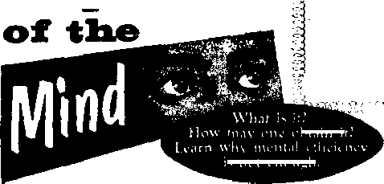
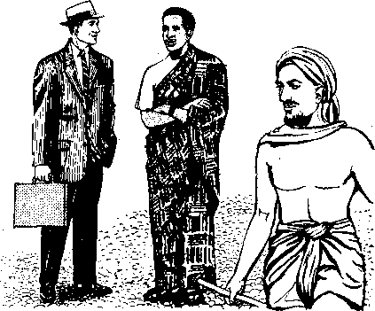
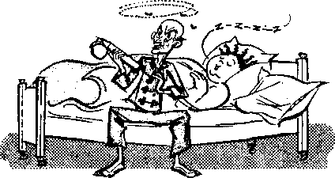

ography and People in North America
o Is the Dalai Lama?
SEPTEMBER 8, 1959
THE MISSION OF THIS JOURNAL
N«ws wurcct that are abl* to keep you awoke to. th* vital i»uei at our timet mutt be unfettered by ten ton hip and telflth fateretts. “Awa kef" hat no fatten. It recognizet facts, facet facts, it free to publith facts. It it not bound by political ambitions or obligations; it It unhampered by advertisers whose toes must not be trodden On; It is unprejudiced by traditional creeds. This journal keeps itself free that it may speak freely to you. Rut It does not abuse its freedom. It maintains integrity to truth.
"Awake!'’ uses the regular news channels, but is not dependent on them. Its own correspondents are on al! continents, in scores of nations. From the four corners of the earth their uncensored, on-the-scenes reports come to you through these columns. This journal's viewpoint is not narrow, but is international, it Is read in many nations, in many languages, by persons of all ages. Through its pages many fields of knowledge pass in review-—government, commerce, religion, history, geography, science, social conditions, natural wonders—why, its coverage is as broad as the earth and as high as the heavens.
"Awake!" pledges itself to righteous principles, to exposing hidden foes and subtle dangers, to championing freedom for all, to comforting mourners and strengthening those disheartened by the failures of a delinquent world, reflecting sure hope for the establishment of a righteous New World.
Get acquainted with "Awake!” Keep awake by reading " Awake!”
Published Simultaneously in the United States by the WATCHTOWER BIBLE AND TRACT SOCIETY OF NEW YORK, INC 117 Adams Street Brooklyn 1± N. Y., U. S. A*
and in England by
WATCH TOWER BIBLE Watch Tower House, The Ridgeway N. H. KNORR, President
Printing thia itauei 3,850,000
‘Awake I” h pwblUhed In the to I lowing 19 linpiagM; Sam I monthly—Afrikaans, Danish, Dutch, English, Finnish, French, German, Greek, Italian, Japanese, Norwegian, Portuguese, Spanish, 'Swedish, Tagalog.
Monthly—Cinyinja. Indonesian, Ukrainian, Zulu
Yearly subscription rates
Qflm for semimonthly editions
Amr lai. U.S., 117 Adams 8L, Brooklyn 1, N.Y. fl Australia, Il Beresford Rd., Stratbfleld, N.&.W,
Canadm 150 Bridgeland Ave., Toronto 1&, Ont.
England, Watch Tower House,
New lulled, 821 Nev North Rd., Aockland. S.W. 1 7/~ Soatk Afrfca, Private Bag, P.O. Elandsfontetn. Tvl T/-
Monthly editions cost half the above rates.
AND TRACT SOCIETY
London N.W. 7, England.
Grant Surra, Secretary 4d a copy
RimltUnm for subscript Ions should be sent tn the offlce In your country. Otherwise send your remittance to London. Notice *f ex pl ration la sent at least two issues before subscription expires.
CHANGES OF ADDflESS ahoald reach *t thirty day* bifort mr waving date, GM as yair old Md naw addraw (if possible, year otl address label), Watch Tower, Watch Tower Hon*. Tbo Ridgeway, London N.W, 7, England
Sintered as second-dies matter at Brooklyn, N.Y. Printed in England
Ths Bible translation and fa "Awake!" Is the Naw World Tfanslatlw trt the Holy Stflptam. When other translations art iMd th* following synbols wilt appear behind ths ottatloiti:
AjS — American Standard Version AT - An American Translation AV — Authorised Version (1611) Da - J. ?i. Darby's version
Dy — Catholic Donay version BD - The Emphatic Dlxglott JP - Jewish Publication Boc. De - Isaac Leaser's venire
jtfo — James Moffatt's version Ro - J, B. Botherbsm's vend rm Rff - Revised Standard Verslo" Yg Robert Young's version
modern viiurches and Social Clubs
Proper Use of the Mind
A Look at Male Clothing
Nature Notes
Watch Tower House, London
Geography and People in North America
|
3 |
Who Is the Dalal Lama? |
|
5 |
No Pampering for Delinquents |
|
9 |
Home Sweet Home |
|
13 |
“Your Word Is Truth" |
|
14 |
Must Christians Be Abstainers? |
|
16 |
Watching the World |
21
8 Si til £
YOU may have noticed that the weekly programs of many churches today read much like the program for a social club. The emphasis is more and more on social activities. This stressing of the social element is part of what some writers call ‘going modem.’ A modem church, in fact, is a social club. An article entitled “The Churches Go Modem” in the Saturday Evening Post of October 4, 1958, said: “Church membership has grown from 35 percent of the 75,000,000 who populated these United States in 1900 to 60 percent of today’s 170,000,000. . . , The gradual transformation of the churches themselves, both as institutions and as buildings, is more interesting than numbers. . . . The new churches . . . are not only sanctuaries but also complex meeting places . . . The Wesley Memorial Methodist Church of High Point, North Carolina, has planned for ten bowling alleys, a swimming pool, an ice-skating rink, a gymnasium, three softball diamonds and several tennis courts.”
What a revealing comment about modem cliurches! How enlightening it is regarding the record-breaking church membership figures! Clergymen have often lamented the fact that the so-called return to religion is hollow, that the increased church attendance has not really changed the lives of the parishioners. As one clergyman in Ohio put it; "We simply cannot see where we are going in the church. Our churches are successful. We gain more members, we have more at church, we have bigger budgets, we have more activities. But we can't see that we are making much of a difference in our communities or in the lives of the individual members of our communities.”
But does a social club change the lives of its members? Are social club members under obligation to live by Bible principles in all aspects of daily living? Are the entrance requirements for a modem church much different from those of a modem social club? Warren Ashby, who has served as minister of several Methodist churches, writes in Theology Today: "The entrance requirements of the church, like those of a social club, are primarily external and they provide status.. . . The requirements are external in that one must profess a faith before men; but this does not mean that the profession has substance in fact as well as in words. And, again like the social club, once the entrance requirements for admission are passed, the requirements for remaining within the church are not
difficult to mdet. It is not hard to be a Rotarian. Nor is it difficult to be a member of the local church.**
What is the attraction of a social club? Social fellowship, status, prestige and entertainment. What is the attraction of a modem church? It certainly could not be preaching, for, according to the clergy’s own admission, that has been relegated to a minor position. When the Russell Sage Foundation and the Union Theological Seminary sent out questionnaires to 1,600 ministers, they wanted to “find out how ministers function as pastors of churches in the United States.” (New York Times, April 4, 1955) Ministers of twenty-two denominations responded. Their answers revealed that churches are rapidly becoming more like social clubs than places of worship and that today’s pastor is not so much a preacher as he is organizer, promoter, financier, psychologist, administrator, entertainer and socialite.
No wonder, then, that the so-called religious revival lacks Bible-approved fruitage! The right kind of moral fruitage is not possible unless the pure, unadulterated Word of God is taught. When the Word af God is watered down, however, with the traditions of men; when that Word is shoved aside and supplanted by philosophy, sociology, psychology, politics and a resume of current events, there is no power to direct people to live by righteous principles. God’s Word in all its purity has the power to attract people who have the right heart condition. Jesus did not draw people by entertaining or by putting social activities in the limelight. He featured the Word of God. True, Jesus sometimes fed the crowds miraculously, but it was not for entertainment or socializing but to make it possible for the crowds to remain and hear the Word of God. Those who became Jesus’ followers had to live by the principles he set forth. Jesus did not found a social club; he founded Christianity, and true Christianity is a way of living—living by the divine will.
When the things modern religion has substituted for spiritual food fail to work, rather than getting back to the view that Jesus had, the churches go farther the other way, resorting to bazaars, bingo, plays and dances, social rooms with dating parlors, hi-fi, tennis courts, swimming pools, bowling alleys, etc. There is something wrong with the spiritual food when the churches must resort to such things to keep their members or gain new ones.
Jesus said: "My sheep listen to my voice.” (John 10:27) The voice of the Right Shepherd is not sounded by hi-fi or by the din of bowling alleys. It is sounded by teaching what Jesus foretold to be the basic ingredient of true spiritual food at this world’s “time of the end”—the good news of God’s established kingdom.—Matt. 24:14.
In a world of bad news, good news draws people. “This good news of the kingdom” will draw right-hearted people. The meetings and conventions of the New World society of Jehovah’s witnesses show this to be true. At the Divine Will International Assembly of Jehovah’s Witnesses in New York city in the summer of 1958, both Yankee Stadium and the Polo Grounds were packed out with a crowd that totaled 253,922 persons. Young persons as well as older ones came to hear the Bible message “God’s Kingdom Rules—Is the World’s End Near?” It was the abundant spiritual food that drew people from all parts of the world to this convention, showing the tremendous power of the unadulterated Word of God.
The question that confronts all professed Christians today is: Will they be socialclub Christians or Bible-fed, Bible-living Christians? Happiness and life depend on making the right choice.
Proper use
is not eunuch.
bt;nn ir
•‘finally. bfofttfi, wtiattw Mw <m iru*. wbotow tht-fto* <m of *•- t J flout corKsmr whatever Ihfngi «ra £_» fijhleovt, whatever Jhlngi ore ehatre, < whatever ttiingt art lavobte, what- ^-7 •re* lWng« are well spoken a€ what- C ■, «Y*r virtue theta It and whatever '- ' pralteworthy thing there it, ceatlnuo C • cemidaring theie thlegk1*—/hH« 4x#< -
T3E human brain is a priceless and delicate instrument. It is said to be the most complicated structural apparatus known to science. “Our intelligence can no more realize the immensity of the brain than the extent of the sidereal universe,” says Dr. Alexis Carrel. With its ten thousand million nerve cells, the brain, during an average life span, can store up about ten times more information than is contained in the 9,000,000 volumes of the Library of Congress. Such a marvelous instrument as the human brain deserves proper care.
To search out information, to reason on it and to arrive at conclusions, we use that faculty of our brain called the mind. Since our habits of living affect the brain, immoderate habits are certain to have a bad influence on the mind. So it is important for anyone interested in proper use of his mind to learn the principles that the brain’s Creator has set down in his Word, the Holy Bible. These principles furnish the basis for proper use of the mind.
One of these God-given principles is the need to be "moderate in habits.” (1 Tim. 3:2, 11) If we are immoderate in matters even so vital as sleeping or eating, the mind suffers. Sleep enables the body to build up nervous energy—that vital requirement for mental efficiency. But one cannot obtain more nervous energy by sleeping more than it is necessary to sleep. It is important to know how much sleep
one needs each day. Depending on the individual, an adult needs from seven to nine hours of sleep to allow body and nerve cells to regain energy expended during the day. Sleeping more than is necessary not only wastes time but may lessen the amount of energy one has available.
Lack of sleep reduces the ability of the mind to concentrate. “Experiments on the mental effects of loss of sleep show how great a restorative sleep is in accelerating mental functions,” writes Donald Laird in Increasing Personal Efficiency. “Memory tests in the case of one man . . . took 134 seconds before the start of the loss of sleep. After going without sleep almost four days, he was unable to memorize any of the parts of this test.” A constant skimping of sleep does not allow for proper use of the mind
Overeating Hinders Proper Use
Too much eating, too much fasting, tod much exercise or too little exercise hinders proper use of the mind. Overeating robs the body of nervous energy needed fort mental alertness. It is difficult to say just how much nervous energy is squandered by heavy eating, but one doctor puts it this way:
“If it were true that the energy one needs for his physical, mental and emotional activities came directly from any food, he could easily get all of the energy he wanted by just eating large quantities of that food. But those who try this know that this practice leaves them with much less energy than they have when they eat only small quantities of the other foods which the body actually needs. Observation of those persons who eat large quantities of starches, sugars, and fats, will reveal that they have much less energy than other persons who eat only small quantities of these foods. . . . Food can waste an enormous amount of nervous energy. The average person uses half of his nervous energy for digesting, absorbing, using, and eliminating the food he eats; and half of this energy is wasted because of his eating more food than he needs for health, strength and vigor.”
So how timely a warning the Lord Jesus gave for all professed Christians at this world’s “time of the end"! “Pay attention to yourselves,” warned Jesus, “that your hearts never become weighed down with overeating and heavy drinking and anxieties of life, and suddenly that day be instantly upon you as a snare.” (Luke 21: 34, 35) Overeating does not necessarily mean gluttony; it can mean eating in a way that weighs one’s mind down with drowsiness just at a time when one needs to be mentally alert to take in spiritual food, such as by listening to a Bible lecture or participating in a Bible study. Energy derived from spiritual food is just as real as that derived from literal food and Is absolutely vital, as Jesus declared: “Man must live, not on bread alone, but on every utterance coming forth through Jehovah’s mouth.” (Matt. 4:4) To weigh one’s mind down with food-induced drowsiness when it is time to take in spiritual food is not proper use of the mind.
Something else besides overeating can make the mind sluggish: a lack of oxygen. "Oxygen,” says Allan L. Fletcher, “is essential to carry off the waste acids generated by the body in both physical and mental activity. If insufficient oxygen is present, the body and mind become sluggish and dull. It is therefore of the utmost importance that when you sit down to study or memorize, the room in which you work should not be stuffy and close.”
Keeping the Mind Active
Proper use of the mind requires mental exercise. “Every human being is bom with different intellectual capacities,” writes^ Alexis Carrel in Man the Unknown. "But, great or small, these potentialities require, in order to be actualized, constant exercise, . . . Senescence [aging] seems to be delayed when body and mind are kept working." Moreover, studies made at the University of Minnesota show that one keeps his mind young and alert by using it. Discussing these studies, The American Weekly said: “People whose way of life brings little mental exertion tend to ‘go to seed.’ ”
So we need to stretch the muscles of the mind. Jehovah God designed man’s brain for activity, as is evident from such Bible principles as Paul gave to Timothy: “Ponder over these things.” "Give constant thought to what I am saying.” Here the apostle advises giving constant thought to Bible principles. This requires thinking, keeping busy in the head, never giving way to mental laziness.—1 Tim. 4:15; 2 Tim. 2:7.
Disciplined Attention
One reason why some minds may seem lazy is that they have not been disciplined to pay attention to what is important. When the schoolteacher says, “Johnny, pay attention!” it is likely that Johnny’s mind is not inactive tbut is busy^pjL the wrong things, s^h tiyUje^NoFonly^fiildren need to learn disciplined attention, but adults must discipline themselves to pay attention. “Pay more than the usual attention to the things heard by us,” is the Bible principle stated at Hebrews 2:1 in regard to spiritual food. So concentration on what is important must be learned.
Disciplined attention admittedly is not easy. The mind likes to wander and go grasshoppering from one inconsequential thought to (another. So it is important to know what not to pay attention to. Learn not to let your train of thought be interrupted by every passing stimulus. Noises such as those caused by moving automobiles, trucks and trains can be powerless to distract you unless you choose to let them do so. Such distractions cannot claim your time and attention if you refuse to give them your attention.
If disciplined attention is not learned, one’s mind, though busily engaged, may accomplish very little on one’s important work. “One can be as busy as a weather vane in a sixty-mile gale,” writes Simeon Stylites, “and still be indolent in the worst kind of way—busily indolent. When a person shows little zeal on his main job he is indolent, no matter how briskly he prances around at something else. A center fielder on a baseball team can be as busy as a bird dog—hunting for four-leaf clovers. Meanwhile a ball has just left the bat and is touring the sky like a sputnik. But it is due to come down inside the park, and the fielder is criminally indolent if he is not, literally, ‘on the ball,’ no matter how many four-leaf clovers he finds.” So it is with the person studying or meditating. If he lets his attention wander, he will make little progress toward what he originally set his mind to accomplish. Disciplined attention is like an umbrella that enables one to shed the raindrops of distraction and keep on concentrating on what is important.
Proper Food for the Mind
Many persons today, though their mus-:les may be developed by exercise and heir bodies nourished by food, exercise heir minds only under protest and feed hem only on the pap of trivialities. Some arsons have their mental menus filled vith contaminated food. They would not think of eating filthy literal food, but when it comes to mental food they devour what is unclean. This is evident from the fantastic sales of books that feature vivid descriptions of immoral behavior. Educator Alan Valentine says: “A special Congressional committee reported on December 2, 1952, that an ‘incredible volume’ of filthy literature is flooding the nation’s newsstands. . . . The committee said that the salacious paperbound books, ‘girlie magazines’ and so-called comic books (of which some ninety million are read each month) have become a serious menace to the nation. But the public seems more delighted than outraged, and its taste and valuejudgment presumably decline further with each new daily dose of commercialized vulgarity.” If one does not read and meditate upon proper things, he is engaging in mental dissipation.
How important to know the right kind of food for our minds! For proper use of the mind we need to test our mental fodder with the food-testing principle stated by the apostle Paul: “Whatever things are true, whatever things are of serious concern, whatever things are righteous, whatever things are chaste, whatever things are lovable, whatever things are well spoken of, whatever virtue there is and whatever praiseworthy thing there is, continue considering these things.”—Phil. 4:8.
Whatever food the Christian provides for his mind should meet that Bible requirement—that it be true, of serious concern, righteous, chaste, lovable, well spoken of, virtuous and praiseworthy. How evident that much of the world’s reading matter does not meet this requirement for proper mental food!
By filling one’s mind with proper food he is better able to avoid the activity and emotions that are injurious, such as those condemned in the Bible: “Fornication, uncleanness, loose conduct, idolatry, practice of spiritism, hatreds, strife, jealousy, fits of anger, contentions, divisions, sects, envies, drunken bouts, revelries, and things like these.” On the other hand, we will be developing qualities and emotions that God approves and that are so beneficial to mind and body, such as “love, joy, peace, long-suffering, kindness, goodness, faith, mildness, self-control.”—Gal. 5:19-23.
Proper emotions are known to be of inestimable value. Long before psychosomatic medicine brought into the limelight the close relationship between mind and body, the inspired King Solomon said: “A heart that is joyful does good as a curer, but a spirit that is stricken makes the bones dry.” (Prov. 17:22) Right emotions are needed for proper use of the mind. Writes Dr. Denton Higbe: “Joy, contentment, hope, courage, faith, love and similar emotions not only indirectly increase your energy but they directly increase the amount and improve the quality of the work you do. . . . Uncontrolled emotions, hate, anger, resentment, jealousy, worry, emotional conflicts and complexes, and wrong mental attitudes, waste an enormous amount of nervous energy.” So bad emotions can cause bodily illnesses and also deprive the mind of the nervous energy needed for mental efficiency.
An Efficient Mind Not Enough
But more than mental efficiency is needed. Some of the most clever, brilliant and efficient minds operate in a moral vacuum. Proper use of the mind requires moral and spiritual goals. So the Bible must be used for moral guidance. A Christian needs to use his mind to direct his body in a way that will win the approval of God. Mere efficiency of mind does not please God, but mental efficiency that results in obedience to the divine will does!
“Keep your minds fixed on the things above,” is sound Scriptural advice given by the apostle Paul. So proper use of the mind involves thinking that is primarily concerned with God’s kingdom and its interests. The Lord Jesus Christ set the perfect example in proper use of the mind. He kept his mind fixed on God’s kingdom and its interests by teaching and preaching that kingdom wherever he went, in public places and from house to house. Jesus taught his followers to keep their minds fixed on the things above by praying: “Our Father in the heavens, let your name be sanctified. Let your kingdom come. Let your will come to pass, as in heaven, also upon earth.” He also taught them the need to pray for God’s holy spirit: "If you, although being wicked, know how to give good gifts to your children, how much more so will the Father in heaven give holy spirit to those asking him.'” God’s holy spirit is needed to effect a change from improper thinking to that which , is proper; it is needed to energize one’s mind for the carrying out of the divine will.—Col. 3:2; Matt. 6:9, 10;.Luke 11:13.
For this “time of the end” it is the will of God that proper use of the mind include something very special. This is the. work that the Lord Jesus Christ said would busy the minds of true Christians at thq. time of this world’s end: “This good newsl of the kingdom will be preached in all the inhabited earth for the purpose of a witness to all the nations, and then the accomplished end will come.” (Matt. 24:14) To have a share in teaching others this good news of God's kingdom is, in the highest sense, proper use of the mind.
So follow Bible principles for mental health and happiness. Be moderate in habits. Concentrate on what is important with disciplined attention. Select proper mental food. Keep your mind fixed on the things above. Such proper use of the mind leads to the blessing of using one’s mind everlastingly in God’s new world.
Male Clothing
“UE WAS dressed in the ultra pitch 11- of fashion, collared like the leader of a four-horse team, and pinched in the middle like an hourglass, with neck as long as a goose, and a cravat as ample as a tablecloth.” This nineteenth-century satire of an English dandy shows how males can become as ridiculous in their dress as they, at times, accuse women of being. Tight corset, almost skin-tight trousers, ruffled shirt, upright collars whose stiff points reached to the cheek bones and a voluminous neckpiece were considered the height of fashion for the well-dressed gentleman of the late eighteenth century. Being well-dressed ip those days must have been a painful experience.
The manner in which men have clothed themselves has differed greatly through the ages. It has varied from a simple loincloth to voluminous clothes adorned with ribbons, embroidery and lace. An example in point is the skirted costume men wore in the 1660's. It reached to the calves of the legs and abounded with ribbons and lace. The costume was topped off with a long wig that reached to the chest.
No matter how ridiculously some men have dressed they felt properly attired and were inclined to look down upon anyone who was not dressed according to the fashions of their society. Because a person is dressed in a manner that is different from what the people of a country are accustomed to, it does not mean he is inferior to them. Each country has had its own mode of dress that was considered proper and fashionable in that country.
7 How a person dresses does not make him £ inferior or superior to others. Neverthe-f less, clothing has long been used by class-K conscious people to show social superiority. I They fail to realize that the differences clothing makes among people are purely superficial. Without clothing the men of past ages could not be distinguished from
men of today, and the men of social prominence become indistinguishable from the men without social standing.
It has long been the practice for men to show class distinction or social standing by the quality of their garments. In the eighteenth century it was the fashion to unbutton the top of the waistcoat and to put slashes in the jerkin so as to reveal the fine quality of the underclothing. This was also done by exposing the shirt cuffs which, at times, were enlarged with fine lace. The same was done with the collar. It was made so ridiculously large in 1630 that it extended beyond the shoulders and hung down over the chest.
About fifty years before this the collar took the form of a big detachable ruff that fitted around the neck and looked like the bellows of an accordion. It was made of the finest cloth and frequently was embroidered with silk and edged with lace. The quality of this neckpiece would clearly
reveal the financial standing of a man. What governed the changes in fashion was generally what the king wore.
Not much concern was given to bodily cleanliness during the Middle Ages and up to about two hundred years ago. During that time men paraded about in elaborate costumes of lace and linen that gave an outward appearance of cleanliness, but underneath their bodies were filthy. Underclothing principally served to protect the fine outer clothing from the dirt on their skins. Heavy doses of perfume were used to kill the body odor. It became the custom to wear silk and linen undergarments because they were less inclined to harbor lice than woolen ones.
Fashion Peculiarities
The male calf was considered to be attractive in the late eighteenth century. To make it appear shapely under the tight-fitting hose of the time it was customary to wear artificial calves. These consisted of carefully made padding that was fastened to each leg by means of straps. The hose was then pulled over them. Their thickness was something of gentlemanly concern. The ones worn in the spring were made a fraction smaller than those worn in the winter. A comedy of that time pointed this out when one of the characters said: “You should always remember, Mr. Hosier, that if you make a nobleman’s spring legs as robust as his autumn calves, you commit a monstrous impropriety, and make no allowance for the fatigues of the winter.”
In the sixteenth century fashion dictated that men should wear bloomerlike trunks that were stuffed full of rags and horsehair to make them swell out. A well-dressed man of that time looked as if he was walking around with a giant pumpkin about his loins.
An equally ridiculous fashion was the practice in the fifteenth century of lengthening the toes of shoes. They grew to such length that it eventually became necessary for gentlemen to fasten them to their knees to avoid tripping other people as well as themselves. Even with shoe toes social rank was shown. A law prohibited the wearing of shoes with toes longer than two feet by men whose income was below a specified amount.
When the European male felt that his natural hair was not sufficiently impressive he began wearing a periwig. This was an immense wig with a profusion of curls that hung down over the chest and back. It was later reduced to a more moderate size. In the latter part of the eighteenth century the wig was raised so as to give the wearer’s head a grotesque lengthened appearance.
Using wigs as part of male dress is a very old practice. It was done long ago by the ancient Egyptians. They cut their hair short and then wore a black wig made either of human hair or of sheep’s wool. The Greeks and Persians of old time also wore them. Although wigs today are no longer a standard part of male dress, they are still,used by many men whp are conscious of their appearance. The number of men wearing artificial hair to cover baldness runs into the tens of thousands.
Male Dress Still Varies
In past centuries when poor transportation and communication facilities kept earth’s inhabitants more separated from one another than today, clothing fashions were distinctly different from country to country. Even within some countries clothing was distinctive according to locality. But improvement in transportation and communication has changed this measurably. Now men’s dress the world over is generally along the lines of the European suit. However, variety of dress still exists. The old and the new forms of dress are often worn side by side.
On special occasions the peoples of many countries will don their national dress. When the holiday has passed they return to their twentieth-century European suits. In the Netherlands the people living on the island of Marken, in Volendam and in Spakenburg continue to dress in the quaint costume of their forefathers. The men of Volendam wear long, voluminous trousers of navy-blue material with matching jackets.
Among the country people of northern Greece a traveler today will find men still wearing the fustanella. This consists of a white, billowy skirt that does not quite reach the knees. A large-sleeved shirt is worn with it. Over this is donned a scarlet vest with embroidery and gold thread. Above the shoes with their upturned points are worn leggings of white cloth. The costume is topped off with a red cap called a fez. This costume is not worn by the average city dweller of Greece. He prefers the modem suit.
In Arab countries the mixture of European and national dress can be found, but with favor being shown to the national costume. Generally, these people prefer to dress as their ancestors did. The well-dressed Moroccan gentleman, for example, wears a strip of white wool or cotton wrapped around his body. It is about six yards long. Along with a white turban or a red fez, it is the clothing for outdoor wear. Underneath he wears loose cotton drawers that reach nearly to the ankles. Above this is a shirt that is closed down the front with a set of buttons and loops. Worn over this shirt is a roomy coat of long, exceptionally wide sleeves. A pair of loose-fitting leather slippers serves as footwear.
All this clothing may seem out of place in the hot North African climate, but it actually serves the good purpose of protecting the men from the torrid heat. Tuareg tribesmen of the Sahara desert wrap themselves in indigo robes and wear turbans of a matching color or of white. Some of the material is wrapped around the face to serve as a veil. Only the eyes are exposed. They believe they must wear the veils to protect their souls. The veils serve the practical purpose of giving protection from the hot, dry air and from wind-blown sand when the Tuareg rides swiftly about the desert on his camel.
There is, of course, a variety of dress in the Arab world. Not all wear a robe when walking about the streets. Many will go about in their long, roomy coat. In Arabia the long white shirt worn by men has elaborate embroidery about the neck and across the front. The shirt reaches from the neck to the ankles. A wide sash is wrapped about the waist. In the sash is the silver-hilted dagger that the men of Arabia wear. Stockings are not worn. In place of them some Arabs wear tight-fitting slippers that fit inside their street slippers. Some prefer to wear a thick-soled sandal instead of the leather slipper. These generally have an ornamental nail in the top of the sole that fits between the first two toes. It is common to see one of these men wearing for a headpiece a square cotton cloth that is folded diagonally. It is held to the head by means of a fillet of wool wound with gold or silver threads.
Another man that holds to an old form of dress is the Hindu. He wraps about his lojns a cloth that is called a dhoti. It is usually made of white cotton and is wrapped about the loins with the ends being passed between the legs and fastened at the waist in the back. Some Hindus wear nothing more than this dhoti. Others will add a short-sleeved shirt that is open at the neck and is worn with the tail out.
Some men of India prefer to wear the trousers that Moslems favor. These are the ankle-length trousers that fit tightly about the legs, but sometimes are full from the knees up. Over this is worn the knee-length shirt with long sleeves. On his head the Hindu wears a turban made from a strip of cloth from ten to fifty yards long.
There are, of course, Indian men who wear modern suits and ties, but these are in the minority. In northeastern India the Naga tribesmen have their own clothing styles. Some wear nothing more than a loincloth and a colorful blanket wrapped under the right arm and over the left shoulder. Part of the costume of the Anga-mi is heavy coils of black cane wound around their legs just below the knee. The wrappings accentuate the calf muscle, which the Angami men consider to be a sign of beauty. The same custom is practiced by the Wai Wai Indians of British Guiana. They have wrappings of blue cord above the calf and tight wrappings of white cord around the upper part of the arms. These wrappings, a necklace, a set of earrings and a skimpy loincloth make up the complete attire of the Wai Wai male.
African Natives
Tha average person of the Western world, usually pictures African natives as being dressed in little more than loincloths, but this is not what the traveler will find in the many cities of Africa. In the interior of the country natives will often be found scantily clothed, but in populous areas they generally wear modem clothing. Some wear suits, others wear trousers with white shirt and tie and still others wear short pants with a shirt that is either tucked in or left out. Some wear felt hats, others the fez, and many wear nothing on their heads. The king of the famous Watusi tribe goes about neatly dressed like a European. A National Geographic writer spoke of him as being "nattily dressed and speaking impeccable French.”
In Ghana the native dress is generally worn only on special occasions. It consists of a colorful cloth that is wrapped around a man’s body like a toga. It passes under the rigtit arm, leaving it and the chest bare. Some persons prefer to wear a shirt with it. A pair of sandals finishes the costume. Since the robes are handmade and very expensive, the average man does not like to wear them for daily use.
Thus as we look about the world we find that there is still an interesting variety of male clothing styles. Each style has features that make it suitable for the climate in which it is worn, the occupation of the wearers or the artistic tastes of the people. The robes of the desert Arab or the business suit of a European would be impractical for the man who must stalk his dinner through forest or bush and then kill it with spear, arrow or poisoned dart. He needs to be lightly clad. The Eskimo, on the other hand, would not find the clothing of the Wai Wai Indians suitable for his climate. He needs his sealskin trousers, tunic and boots to protect him from the rigors of frightfully cold weather. His form of dress is suitable for where he lives and is considered fashionable by his culture.
The modern suit, with shirt and tie, has world-wide popularity and is probably the nearest thing to a universally accepted form of dress. But its popularity does not mean it is the best attire for men and neither does it mean that those who wear it are superior to those who do not. The future will undoubtedly bring clothing styles that will be much superior to what we have now. But whatever a man may wear, his clothing should be comfortable, functional, pleasing to the eye and, above all, sensible.
LISTEN,NG DEV!CE "Once in the Cherokee hills of
Georgia,” says Maurice Thomp-
son in By-Ways and Bird Notes, “I watched a pileated woodpecker dig a hole to the very heart of an exceedingly tough, green, mountain hickory tree, in order to reach a nest of winged ants. The point of ingress of the insects was a small hole in a punk knot; but the bird, by hopping down the tree tail-foremost and listening, located the nest about five feet below, and there it proceeded to bore through the gnarled, cross-grained wood to the hollow.”
ADVANCED FISHING TECHNIQUE fl. The United Nations Educational, Scientific and Cultural Organization recently reported that listening lo the voices of fish in order to locate schools is not a new idea, “In many countries,” reported the New York Times, “sonar anti-submarine listening and ranging devices have been modified to locate schools of fish. This, says UNESCO, is nothing new to ‘every experienced fisherman in Ghana,’ the agency quotes S. K. Otoo, a Ghanaian. The Ghanaian fisherman paddles out to fishing grounds and pokes his paddle blade down in the water. He then grabs the end of the paddle with a cupped hand and bends over to listen. He hears ‘all the noises going on under water, including the "voice” of any fish in the area,’ UNESCO says.”
ALARMED BURGLAR
fl. In Ottawa, Canada, a burglar smashed the rear door of a service station. He was no sooner inside the office than a big German shepherd dog named Belle jumped him. The alarmed burglar tried to slam the door shut but succeeded in closing it only partially. With the dog blocked for a„ moment, the burglar plunged headlong out a side window. As the burglar leaped the dog or a piece of glass caught his trousers, causing his wallet to fall out. Detectives used the wallet to learn the burglar’s identity. He was quickly arrested. ‘Td imagine it was the dog that did it,” said a detective, discussing how the wallet happened to fall out. ‘'From what we were able to discover, Belle had taken a powerful interest in that particular spot.”
NO GNASHING OF TEETH
€. At the Puget Sound naval shipyard a workman put down his lunch bag. A seagull, on reconnaissance, swooped down and made off with the lunch bag. The disgruntled workman would not have been so intensely angered by having his lunch suddenly disappear had not the bag also contained his false teeth.
MOSQUITO APPEAL
fl. Rutgers University recently disclosed that one’s “mosquito appeal” can be measured by the chemical components of one’s exhaled breath and the warmth one’s body emits. "Generally, thinner people have a higher metabolic rate,” says Dr, Lyle E. Hagmann, "because their energy and bodies consume food faster than fatter people.” This likely means, he said, that thinner people have more mosquito appeal, although many fleshier persons may well deny this. Dr. Hagmann reports that the mosquito finds its target by means of a built-in rad ar like heat-detection system in its front legs. It seems quite apt that most mosquito repellents developed at Rutgers repel, not by smell, but by stinging or irritating the mosquito’s sensitive feet, causing it to go away with an entomological hotfoot.
ouAe,
By "Awakal" correspondent tn Britain
ehovah’s witnesses know the value of organization. They find it throughout all the handiwork of God and throughout
his written Word, the Bible. In modern times the Watch Tower Bible and Tract Society was chartered to organize and direct Jehovah’s witnesses in their work of preaching “this good news of the kingdom.” In the year 1900 the Society opened its first Branch office, at Gipsy Lane, Forest Gate, East London, and that is where our story has its humble beginning. From this tiny place Bible literature was sent out to the growing band of workers throughout Britain. The result was that in a few years the need arose for a larger and more central location, and a change was made to Eversholt Street, which runs by Euston Station. It was not long before growth in numbers and expansion of activity made it necessary to seek still larger quarters, and thus in 1911 the Society's Branch office was moved to 34 Craven Terrace in the West End of London. For nearly half a century this address, known around the world, was to be theheadquar-ters of Jehovah’s witnesses in Britain.
In 1955, when the president of the Society was in London for an international convention of Jehovah's witnesses at Twickenham, he announced the Society’s intention to build a new Bethel home and factory here to meet the growing needs of the British field. That this was necessary was clear from the fact that the number of active ministers was now about 35,000 in these islands.
London, in common with most of the large cities of the world, has outgrown itself, and this has made it necessary for the authorities to exercise strict control over all building operations. To find a suitable site within easy reach of Central London was no easy task. Many inquiries and much searching finally located a delightful site at Mill Hill, formerly occupied by an old mansion and its surrounding gardens. The house was gone and the gardens were a wilderness. It is eighteen acres in size and just eight miles northwest of the city center and about a mile east of the London-to-Scotland trunk road. This is the property the Society bought
Now as we come up the hill from Mill Hill East underground station half a mile away, our first glimpse is of the white-railed ranch-type fence threaded through brick piers spanning the four-huridred-foot frontage of The Ridgeway. And there among the beautiful trees sits a fine modern building In red brick, with lots of glass, neatly trimmed in white.
Watch Tower House is roughly in the shape of a “T,” with the living quarters in the cross part of the "T” and the factory and offices and Kingdom Hall in the stem. Entering the drive past cedars of Lebanon, elms, beeches and chestnuts, we arrive at the main door, above which is a sculptured watchtower in a panel of Portland stone. To the left of the entrance hall are the lounge and library, leading to the house where all those who work here live. To the right of the entrance on the ground floor is the pressroom, where the new rotary press is printing The Watchtower and Awake! Also on this floor is the maintenance shop and, at the far end, with access from outside the building, the Kingdom Hall. Upstairs above these departments is the office, job printing department, magazine department with its address stencils and the bookroom.
On the stairway leading to the office and rising sixteen feet from the top of the first flight is a white sculptured relief inset in the wall featuring five people of different nationalities in native dress, each holding a copy of The Watchtower, against a vine-and-fig-tree background, showing the uniformity of purpose among all races of Jehovah’s witnesses.
The residential and domestic quarters run from east to west and consist of sixty-two living rooms, each designed for two people and distributed on three levels. There are sufficient rooms to accommodate those who jwill attend the school of congregation servants soon to be established. On the ground floor are a dining hall, modern kitchen, laundry, sewing room and stores. From the tall windows of the dining hall there is a view across the lawn and gardens to suburbs of North London in the distance. How much more pleasant it is to work in such lovely surroundings!
A day long looked forward to by the Bethel family and other brothers who had worked so hard in getting the building completed was Saturday April 26, the day the building was dedicated to Jehovah, In the early evening a meal was served, followed by informal remarks from members of the family and visitors. All were happy to have shared in the work during the winter months and now they were present to relax and see the results of their labors in the fine building devoted exclusively to the Kingdom work. One sister told of her forty-nine years at Bethel and of the many changes and growth during that time. Another who had been here less than that number of days told of his joy at being able to serve in this new Bethel home. Then all were taken on a tour bf the building.
At eight o’clock the family and visitors joined the brothers from the local congregations at Mill Hill and Edgware for the dedication of the building. Brother A. P. Hughes, the Branch servant, emphasized that the beautiful new hall and the entire building with its equipment would be used solely to praise the true God, Jehovah. The Kingdom Hall would be a fine center for the preaching work and a fine place to which to bring all of good will toward God. At the conclusion all assembled requested that a message be sent to Brother Knorr telling of their gratitude to Jehovah and the Society for this fine building in which to work wholeheartedly for the Kingdom. It was a very happy and memorable day.
MEXICO
Though
: %T phy. is; longer a study lines and colored‘ara^|F^ on simple maps outsize schoolbovit^^ recently said the
York Times. “It'l^^fe^ analysis of the relations. ()f : land and sea to people and • what they do.” ■
CANADA
UNITED STATES
why in cer-other places,
Yes, geography explains particular crops are raised : tain places and others in < and why a part of a country has directed' its economic life along certain lines and another part along other lines. Geography explains why people usually prefer parts of a country to other parts; in fact, by knowing the" geography of a region, one has a good idea whether he wants to live there.
The word “geography” is derived from the Greek word geographia, which may be translated as “earth description.” Obviously geography takes in many elements. It includes climate, that is, temperature conditions, rainfall and storms and winds. It includes surface configuration, the major classes of land being plains, plateaus, hill lands and mountains. Geography includes earth’s resources in a certain area, such as water for drinking, water for power, water for navigation. It includes soil types, minerals, forests and wild game. Many things are involved, then, in geography, That is why geography affects everyone.
\.2geo graph y does not
. , /necessarily, determine the kind . ..of work one does, it has a ’bearing on the work haiapy persons in a certain .area do for a livelihood. This is because geography ... .puts’ certain limits upon the types. Of things that men can pro-y ? duce and the kinds of economic activities’ in which men can successfully engage. It is interesting to see how geography affects people in this regard in North America.
Taking a look at North America on the map, we find the western coast high and rocky, as is the northern part of the eastern coast; but the southeast has a smooth and gently shelving shore. A huge mountain range, of which the Rocky Mountains are the chief, forms the axis of North America, extending from Alaska to Tehuantepec, Mexico. Southward from the United States, Mexico’s two great mountain ranges, the eastern and western sierras, join in a series of lofty peaks near Mexico City, D.F. Between these two ranges lies Mexico’s Central Plateau, the area of year-round moderate temperatures in which is located nearly every large Mex-lean city. On the east of the North American continent a secondary axis is formed by the Appalachian Mountains, which extend beyond the St. Lawrence River, ending in the hills of Newfoundland. To see how geography, in a general way, is related to people and what they do, we will divide North America into its most distinctive regions. Though each of these regions has great variety, geography has affected each one in at least one outstanding way.
The Tundra Pastures Region
The northern fringe of the continent from Labrador to Alaska is virtually a treeless land with cold and long winters and short summers. It is an area of little production, agriculturally or otherwise. Why? The land's geography explains. Here, where much of the land is north of the sixtieth parallel, every month of the year sees frost. Agriculture is hardly possible. So the inhabitants, mostly Eskimos, are obliged to live by hunting and fishing. The tundra, however, with its many kinds of grasses, is a good land for reindeer, and several large herds have been developed.
North American Forest
This is a vast region extending from the Pacific Coast and the Yukon Basin of Alaska to Labrador. Since most of Canada comes within this region, it is obvious how geography has favored Canada—with luxuriant forests. About 44 percent of Canada is said to be covered by forest growth, a growth of some 150 species of trees, thirty of them being conifers. How has this geographical asset affected many Canadians? A report in 1955 showed that Canada’s lumber industry employed 58,-586 persons and its pulp and paper industry 62,205 persons. Since forests give shelter to animals, it is not surprising that Canada is one of the two great furproducing countries of the world.
Though most of the great northern forest is in Canada, there are good portions in the United States, in New England, Michigan, Wisconsin, Minnesota, Washington and Oregon. Of all parts of the great forest, the Pacific coast from northern California to southern Alaska is best fitted to produce large quantities of lumber. Hie Pacific Northwest, with its mild winters and cool summers and abundant rainfall, is renowned for its thick growth of large trees, such as the Douglas fir, western cedar and giant redwood.
Despite heavy forest growth, agriculture is not lacking in this region. In the Pacific Northwest part of the great forest, for example, we find climate just right for growing apples. Many pei>ons make their living in the various aspects of the apple industry, for Washington state leads the United States in commercial apple production and British Columbia provides most of the apples for Canada.
Large cities in the Pacific Northwest part of the great forest, such as Portland, Tacoma, Seattle and Vancouver, are not only great centers of lumbering and wood products manufacturing but also great commercial ports. Geography favored them, as, for instance, they are on the most favorable route from central North America to the Orient.
Lofty mountains with snow-capped peaks, cool forested slopes with rushing streams and many lakes have made the North American Forest a great attraction for tourists. Many persons in this region derive more income from the tourist trade than from any other source.
The forest region’s streams and rivers, such as the Columbia and Yukon Rivers, have affected people in another way. Here are salmon hatcheries par excellence, and in the Yukon River the chinook salmon reaches a weight of over a hundred pounds. Not surprising that Alaska has long been the world’s largest producer of canned salmon’.
The most valuable mineral of the North American Forest region is iron ore. Most of It is mined in a few iron ranges at the upper end of the Great Lakes. In the vicinity of Lake Superior iron ore occurs In a series of ranges, such as the famous Me-saba range in Minnesota. Cheap shipment on the Great Lakes, by way of the St. Lawrence Seaway and the general high-quality ore make this the greatest iron-ore-producing region in the world.
The Dairy Belt
South of the northern forest from western Minnesota to the New England-Canadian Maritime Provinces (including the Ontario peninsula) is the great Dairy Belt of North America. How is this? Geography explains in two ways: (1) Here the summers are cool and wet, too cool for most grain crops; and cool summers and adequate moisture favor the region for hay and pasture, upon which milk production depends. (2) The Dairy Belt lies next to and partly overlaps the great Manufacturing Belt of North America, so that here are located some of the largest cities on the continent, such as Montreal, Detroit and Chicago; and these large populations create a great demand for milk and milk products. Tens of thousands of persons thus win their living in various aspects of the production or distribution of milk and milk products.
The great manufacturing centers that dot the Dairy Belt use the agricultural products of that region, as the cheese factories in Wisconsin; or the products of nearby regions, as the flour and cereal mills at Minneapolis, Chicago and Battle Creek.
New England~New York
Industrial Region
Along the Atlantic seaboard of southern New England, New York and southeastern Pennsylvania are more cities than in any other region of like size In North America. Why is this? and why are industries of such great variety here? Geography provides much of the answer. The region has many sites for water power and, above all, excellent harbors from New England to Chesapeake Bay. All this encouraged commerce, and so great commercial cities sprang up, such as Boston, Philadelphia and Baltimore. New York city, however, is the most significant manufacturing city in North America. The chief industry is the manufacture of wearing apparel and accessories; Other leading industries include printing and publishing, meat packing and the manufacture of foods. Obviously New York city has geographical riches. It has a superior harbor with over 700 miles of water front, and vast quantities of imported raw materials thus contribute to its industries. Through the Hudson River and the Mohawk Valley New York’s location commands the lowest route across the eastern highlands to the Great Lakes and the interior.
Appalachian Coal Region
Stretching from northwestern Pennsylvania to northern Alabama, in the Appalachian Mountains, are located the most important coal deposits on the American continent. In the Appalachian Bituminous Coal Region, embracing parts of seven states (such as Pennsylvania, Ohio and West Virginia) are the greatest known resources of high-grade coal in the world. Cities in the region are likely to be mining centers or manufacturing towns. Scranton is the center and the distributing point for the anthracite-coal region of northeast Pennsylvania. Birmingham is the main coal-and-iron center south of Pennsylvania.
The presence of miners provides a mar-ket for dairy products, and it is not surprising that the Dairy Belt overlaps the coal region. The presence of coal attracts industry, and Industry, in turn, increases the demand for milk products. So part of the Manufacturing Belt also falls within the coal region. What is it that made Pittsburgh one of the outstanding manufacturing cities? Its geography—its accessibility to the coal and natural-gas and petroleum fields of Pennsylvania. With abundant supplies of cheap fuel available and with access by way of the Great Lakes and rail carriers to the iron-ore fields of Minnesota, the city developed into one of North America’s chief iron and steel centers.
The Cotton Belt
As with other regions, geography affects people here in many ways, but we are concerned with only one or two outstanding characteristics. Cotton is the chief characteristic of southeastern United States, usually known as "the South.” The Cotton Belt includes parts of thirteen states, the greatest cotton producer being Texas. Since cotton requires a long growing season, plenty of sunshine and water, and dry weather when the cotton is ready for harvest, this region is just right. Geographical factors set the limits of the Cotton Belt, such as the line of two hundred days’ growing season on the northern boundary. The lives of thousands of inhabitants of this region are closely associated with the raising of cotton and the processing or final manufacture of its products. Growth of such cities as Charlotte, Columbia and Atlanta resulted largely from the success of the cotton-textile industry.
West of the Mississippi River the main cities in the Cotton Belt are Oklahoma City, Dallas, Fort Worth and San Antonio; but these cities are commercial centers and have industries of great variety, such as meat packing and petroleum refining. This region, in fact, ranks first in petroleum production in the United States, most of the region’s oil being produced in Texas. In some parts of this region one can behold oil wells clustered in close proximity to fields of cotton. Truly geography does affect the lives of the people!
Horticultural-Resort Region
From Virginia to Texas, along the Atlantic and Gulf coasts, abundant rainfall during the cotton-picking season discourages cotton planting. Agriculture is limited by big areas of coastal and Interior swamp and by much light and sandy soil. However, since most vegetables thrive on sandy soils, which warm readily in early spring, many persons in the region use land largely for horticultural purposes—for the growing of vegetables, rice and citrus fruit. Certain areas more or less specialize in what they grow. Crystal City, Texas, is noted for spinach; Hammond, Louisiana, and Plant City, Florida, for early strawberries; Sanford, Florida, for celery, and the Chesapeake Bay region for tomatoes. Two areas of this region are just right for orange and grapefruit trees: central Florida and the lower Rio Grande Valley.
Large cities in this region are commercial ports, resort cities or a combination of both. Being near the Cotton Belt, many are concentrating points and processing centers for cotton. New Orleans and Houston thus reach inland for the basis of their growth far beyond the limits of the coastal strip in which they lie.
The Gulf Coast is an important resort area of the region, but the greatest concentration of resorts is on both coasts of Florida. In the winter millions of people flock to resort cities such as Miami to enjoy the mild winter climate.
The Corn Belt
North of the Cotton Belt is the agricultural heart of the United States. Here, from South Dakota to Maryland and from Kansas to Virginia, corn is king. All or part of twenty states make up the Corn Belt, but the heart of the Com Belt is from Iowa to Ohio, ftich land is the main resource here, and it is mainly flat prairies. This fertile region has a growing season of less than two hundred days, one that is too short for cotton but ample for corn; so the 200-days’ growing season line is the boundary between the Cotton Belt and the Com Belt. Geographical factors, such as an average rainfall of more than ten inches in three summer months, give the Corn Belt the prime climatic requirement for com.
How is com used in the Com Belt? Mainly to feed livestock—cattle, sheep, hogs and poultry. Though most of the livestock are bred on the farms, great numbers of cattle and sheep from the grazing lands of the West are shipped in, the farmers buying young cattle or lambs, fattening them up especially with corn. So the chief cash product of the Com Belt is meat.
Significant cities in the western part of the Corn Belt are usually stockyard cities, such as Sioux City, Iowa, and Kansas City, Missouri. Chicago is the largest of the stockyard cities even though it is within the Dairy Belt. But because of its location on the margin of the Com Belt and because of its superior rail connections with the grazing lands to the west, it is the largest meat-packing center in the world.
Com is king also in the Central Plateau or heart of Mexico, but in a different way. Mexico’s Central Plateau is mainly a zone of extensive subsistence agriculture, and com supplies more than one half of the region’s food. Most of the corn is eaten in the form of thin, unleavened cakes called tortiUas.
The Wheat Belt
To the west of the great agricultural region is the cash grain region, where wheat is king. The Wheat Belt stretches from northern Texas to Canada, including parts of Manitoba, Saskatchewan and Alberta. A small area in eastern Washington, Oregon and western Idaho fs also part of the wheat-producing region. Rainfall decreases to the west of the Com Belt, so here geography gives the advantage, not to com, but to crops that are comparatively drought-tolerant, such as barley and wheat. Wheat is raised, not to feed to livestock, but to be sold for cash. Cities such as Fargo, Saskatoon, Winnipeg and Wichita are concentrating points in the flow of grain from the country towns to the eastern markets and milling centers.
The Grazing Country
A part of the North American Forest overlaps this region; and like the great forest the grazing country is a vast region, stretching from the Canadian border deep into Mexico and'from western Nebraska to California. It is a land of dry high plains, plateaus, mountains and some real desert. From the agricultural point of view this is an area of deficient rainfall. So many inhabitants of this region have made the best of their geographical assets by resorting to the grazing industry, the three most important animals being cattle, sheep and goats.
Of large cities there are only a few; and these, such as Calgary and Denver, share in the grazing and tourist traffic. Denver is the largest sheep’market in the world. Because of its dry, bracing climate, it is also an important health resort.
Mediterranean Agriculture
California, especially from the Sacramento Valley southward to San Diego, has a climate similar to that of the European Mediterranean lands. Here winters are mild and moderately rainy and summers are long and warm and dry. High mountains to the north and east provide protection against most of the cold waves that sweep down across the plains region. The coast ranges shut off rainfall from the Central Valley, making the climate hot and dry and sunny. These geographic factors have a profound effect on how people use land, making it ideal, for example, for growing fruit, since the climate gives them a desirable color and provides ideal conditions for their drying. It is not surprising, then, that California produces for the United States more oranges, lemons, pears, prunes, apricots and dates than any other state. Citrus fruit is king in the Los Angeles Basin, while the San Joaquin Valley grows more table grapes, grapes for raisins and wine grapes than any other comparable area in the world.
So geography indeed has much to do with people. It affects not only the occupations of many persons in any given area, but also, in no small manner, how people dfess, what they eat and where they prefer to live.
thho if the
: I". .71 । ■ TWt.-1 311'15
!rW 'iMti
' f •” - h. 1 t. r
BY b,AWA«r CORRESPONDENT IH HON$ KONG
more than a J political head of Tibet; he claims to be a god-king.
Tibet’s form of government has long been a theocracy, a government by a god. Several million Tibetans, all devout Buddhists, have sincerely accepted and believed this claim. To many, now, these questions must pose themselves: Is a god powerless to help his people in their hour of greatest need? Are spiritual powers helpless in the face of opposing secular powers, at the mercy of secular powers, in fact?
Non-Buddhists of the West may find they also have questions. Newspaper photographs have made a bespectacled, serious-faced young man, who is the fourteenth Dalai Lama of Tibet, tolerably familiar to the world. But who is he? From what, or where, does his authority to rule stem? Early Tibetan history is shrouded in myths and legend. Buddhism appears to have been introduced into Tibet somewhere around the sixth or seventh century of the Christian era, and was strongly promoted by a dynasty of kings during the seventh, eighth and ninth centuries. For that reason, and because they were believed to be the incarnations of Chen-re-si, the patron god of Tibet, this line of kings, ending with Rah-pa-chen, is known as the "Religious Kings.” Chen-re-si was so highly honored because, although a god, he chose to live the life of men as a Buddha, bringing enlightenment to his fellows.
From the fifteenth century onward Buddhist claims regarding this deity and his rebirths are more specific. That century produced a priest, Gan-den-Trup-pa, who founded the great monastery of Tashi-Lhunpo, which later became the residence of a Grand Lama whose successor is known in present times as the Panchen Lama.
Gan-den-Trup-pa’s life and works were said to evidence that Chen-re-si lived on earth again in his body. After he died in 1474 his spirit was believed to have returned two years later in the body of a baby boy. Thus began a system of priestly succession. It was the third priest in line of succession who, due to spreading the Buddhist faith throughout Mongdlia, received the title Dalai Lama Vajradhara, from a Mongol tribal king, the title that continues in use to this day.
Background of Present Dalai Lama
Lama-tanchu, the present Dalai Lama, was bom in 1935 in the Chinese province of Chinghai, the son of a peasant, one of a family of six. Two years previous the thirteenth Dalai Lama had died. However, Buddhist doctrine maintained that there had been no real death, that the soul of the Dalai Lama being, in fact, the patron god of Tibet, Chen-re-si, could not die but would incarnate anew in the body of a newborn baby, as it had been doing for hundreds of years.
In Lhasa, the capital of Tibet, stands the Potala Palace, seat of the Dalai Lamas since the seventeenth century, and also of a body of men known as the State Oracle that forms the hierarchy of Buddhism in Tibet. As soon as the body of the thirteenth Dalai Lama expired responsibility devolved on these men, assisted by a select number of other monks, to determine when and where Chen-re-si would be reborn. In the meantime one of their number would act as regent.
Reports have It that it was the regent of Tibet who claimed to see visions in the still waters of Lake Cho-khor-gye, visions that sent a party of lamas hunting eastward to Chinghai, where they .found a tiny house beside a monastery. The house, the monastery, the landscape were all as the regent had visioned they would be. What is more, young Lama-tanchu came toddling out of the house to welcome the visiting lamas, and when he spied a rosary that had been the property of the old Dalal Lama, his childish hands reached for it.
With careful attention the lamas observed the child's features. They agreed that he had the ears and other physical attributes of a Buddha. Tests were applied. A variety of objects were shown to the little boy, who, without hesitation, picked out only those that had been the property of the old Dalai Lama. Satisfied that here indeed was the Buddha incarnate, the lamas did him obeisance.
Enthronement, Education and Religion
In 1939, amid great celebrations and religious ceremony, the solemn-eyed child was carried in state on a gold litter to the Potala Palace, where he was enthroned as the Dalai Lama, “The Living Buddha, The Holy One, the Mighty of Speech, The Tender Glorious One, The Excellent Understanding, The Ocean, Absolute Wisdom, The Defender of the Eaith,” spiritual and temporal ruler of Tibet—a god-king. Millions knelt before him in awe and adoration.
What education has this young man received to fit him for his role? His education in secular matters would seem to have been indifferent. Although Tibet maintained relations with the British in India from and after the British Younghusband expedition of 1904, when Tibet was induced to open two trading posts and conduct trade between Britain and India, and although these relations have continued to be most cordial, recent official letters from the Dalai Lama, including his appeal for asylum in India, are reported to have been poorly framed in English.
Life and conditions in Tibet do not show him to be a young ruler with a modem progressive outlook. Edmund Candler, a correspondent for the British Daily Mail, who accompanied the Younghusband expedition into Tibet in 1904, had this report to pass on in his book The Unveiling of Lhasa, published in 1905;
The lamas or priests dread the “age of materialism and reason, when little by little their ignorant serfs will be brought into contact with the facts of life, and begin to question the justness of relations that have existed between themselves and their rulers for centuries. But at present the people are medieval, not only in their system of government and their religion, their inquisition, their witchcraft, their incantations, their ordeals by fire and boiling oil, but in every aspect of their daily life.” More recent stories from those visiting Tibet tell that little, if anything, has been done to bring about a change for the better.
Religion has been the primary factor in the Dalai Lama’s education and obviously sways his entire thinking. In the main he follows Mahayana Buddhism, which centers on the predominance of mind. This philosophy holds that matter is only a reflection of the mind, and that the prac-ticer, by changing his attitude of mind, may actually change the appearance of things. The purpose of yoga is to discipline the mind through meditation to enable it to accomplish this. In his book The Great Liberation, Doctor Evans-Wentz, an authority on Tibetan Buddhist philosophy, has this to say: “Owing to worldly beliefs which he is free to accept or reject, man wanders in SANGSARA (i.e., the world of illusion or appearances). By altering thoughts or attitudes, a man alters reality.”
ASK FOR THE NEXT ISSUE
* Have you taken a close look at religious art? Those who have, have been amazed at what they saw. In the next Issue read “Take a Closer Look at Religious Art/’ by an “Awake!" correspondent in France.
0 Have you ever felt homesick? Have you known others who felt that way? If so, you will especially appreciate the article “What Is Thia Thing Called Homesickness?"
9 Did you know that we live In a world where men and women in civilized lands worship other mortal men? Those who have fallen into the trap often do not know it. “Are You a Victim of Hero Worship?" Read about it in the next issue.
The Buddhist does not envisage one personal god, but believes that the principle of god is within each man; by complete surrender of himself, by rejecting as much of his physical necessity as possible, by deep and prolonged meditation on right ideas, the Buddhist aspires to identify himself with his conception of god. However, he believes that his redemption from corrupt thinking to divine thinking depends on the aid of higher beings who have attained the Buddha state.
Be it so, the observer of the drama that has recently been enacted in Tibet-cannot help but remark that the high priest of Tibet, a Buddha incarnate, seems strangely unable to change the pattern of reality for himself, let alone assist in the redemption of others.
Escape from Tibet
The people of Tibet believe that they were warned of trouble ahead even before the Chinese announced that they were about to "liberate” the land. The great comet of 1948, the violent earthquake of 1949, freak births among animals and an ancient prophecy by an oracle stating that the thirteenth Dalai Lama would be the last of his line were all interpreted as bad omens.
Lhasa became the scene of training grounds for troops. New regiments were formed. A national anthem was composed. Holy writings were read aloud. New prayer flags! were set up, more prayer wheels were set in motion and incense fires burned, beseeching the gods of heaven for protection and their independence. Evil omens, however, continued.
On October 7, 1950, the enemy attacked the frontiers of Tibet, An urgent appeal was sent to the United Nations, but was rejected. It was considered expedient that the Dalai Lama flee Lhasa to Chumbi on the border of India. There a provisional government was established. In May, 1951, an agreement was reached with Communist China that “Tibet could retain autonomy and promised no change in the Dalai Lama's status, function or power. Tibet surrendered control of its foreign relations to Red China.’’
Some modem Tibetans argued: “We must learn modern methods from someone—why not the Chinese?” But progress was slow and trouble raised its ugly head again. This time the Red Chinese meant business: On March 17, 1959, the Dalai Lama, with his mother, sister and two brothers and a faithful escort slipped out of Lhasa. Climbing over almost inaccessible mountain passes, some as high as 20,000 feet, fording rivers and crossing uncharted terrain, in all for fifty-four days, they finally arrived at Darjeeling, India. This was the story of many thousands of Tibetans whose only aim was to reach freedom in India.
The Tibetan gods have failed. The living incarnation of Buddha, the Dalai Lama himself, has fled. What is in store for this people?
Perhaps in this lies the real tragedy of Tibet, if there be tragedy. In Hungary failure of its people to secure conditions and political rule they desired drove many Hungarians to seek refuge in the God they knew the Holy Bible speaks of as an Everlasting King, mighty in his power to save. Many Hungarians now rejoice in the knowledge that the Almighty God, Jehovah, has already founded a government that will shortly deliver his worshipers from all oppressive, wicked rule. But the peoples of priest-ridden Tibet have not had an opportunity to hear this good news. If any are able to discern clearly the miserable failure of their god-king, and the inadequacy of their religious philosophy, it may very well seem to them that there is not a remaining hope. But the Christian hope of a new world triumphs over ail hopelessness.
No Pampering for Deiingtuenfs
'g Some authorities on juvenile delinquency recently disagreed with the theory that there is no such thing as a bad boy. In an address to the Arizona State Conference of Social Welfare, Denver's Juvenile Court Judge Philip B. Gilliam declared: “We don’t understand juvenile delinquency. We've been told there is no such thing as a bad boy. Well, we’re wrong. Most juvenile delinquents are meaner than hell.'’ (Time, April 7, 1958) A few weeks later District Attorney Edward S. Silver of Brooklyn, speaking on a radio program, said: "I have seen boys—if you want to call them boys—of 16 and 17 that are just as tough as you can make them." He said that “the tough kids” that cause trouble “have to be made to understand that the police and the district attorney and the courts are not going to pamper them."
The district attorney and the judge could profitably have added what the Bible says about boys: “Foolishness is tied up with the heart of a boy; the rod of discipline is what will remove it far from him."—Prov, 22:15.
Home, Sweet Home
By "AwakeP* correspoHdent In Uruguay
THERE is no place like home, whether it be built of wood, bricks, concrete, ice, straw, reeds, paper, or any of the many other substances used by man for constructing houses. Regardless of its size or composition, home is a symbol of security, shelter and comfort. It is a place in the world and yet a place for getting away from the world.
soo HOUSE
In the South American country of Uruguay home is just as sweet to the people there as it is in other countries. As elsewhere there is a wide variety of houses as well as building materials. In the modem city of Montevideo tall, steel-reinforced concrete buildings provide homes for hundreds of thousands of people. An apartment in one of these modem buildings is home for a city dweller.
But it is in the interior of the country where a person finds homes that are distinctive because of unusual building materials and simple design. Each reflects the ingenuity, skill, creative ability and hard work of the family that built it and now lives in it. This product of their hands is home to them.
The Sod House
The sod house is much more practical than a person may think. It is cool in the summer and warm in the winter. When temperatures rise above 100 degrees a family is cool and comfortable in the well-insulated sod house. During the winter when cold winds whip across the plains the sod house proves to be a warm shelter.
When a rural Uruguayan decides to build one he makes a careful selection of the right kind of soil. In localities where the proper soil exists a person will see entire communities of sod homes. They are usually thirty feet by fifteen feet and one story high.
With the soil and the spot for the home selected, the builder begins his house by cutting blocks of soil of about twelve inches by six inches by four inches. These are then laid in an interlocking pattern so that the wall is about two feet thick and about six feet high. The ends are built up to form gables. Now poles are laid from one end to the other for roof supports. To these poles, the builder securely fastens reeds until he has a roof that is about seven inches thick. It is strong enough to withstand rain and the strongest windstorms.
With the roof up the builder proceeds to partition the inside of the house into rooms. This is done by setting up a frame of saplings and covering it with burlap bags that are sewed together. Sometimes mud or clay is plastered over the burlap. The entire house is then painted or whitewashed, outside and inside, giving appearance. Some persons plaster the outside with a cow-dung mixture , before whitewashing it, that it might have a very hard, smooth surface.
Reed Homes
The reed house is not as solid or as durable as one made of sod. But a builder has to use what materials are available. Since reeds are very 'abundant in the marshes and along streams, communities of reed homes are a common sight in Uruguay, where reeds are plentiful.
When building a reed home the builder levels off a spot and then sets up a frame of freshly cut tree limbs that are about four inches in diameter. Bundles of reeds are then fastened to the framework, not only across the roof but on the sides as well. They are laid in such a manner that it is difficult to tell where one bundle ends and another begins.
The reeds are carefully selected and then cut into lengths of about five to six feet. Before they can be used, however, they must be dried and cured in the sun until no moisture remains in them. WJien in proper condition they are gathered into bundles of about nine inches in diameter and fastened to the house. A well-constructed reed house is rainproof and windproof.
The Brick Bouse
The bricks used in many Uruguayan homes are not made in modern mechanized brick factories, but are made by hand. It is a trade that is carried on by a number of private "factories." Since no machinery is used, much skill is required by the brickmakers.
The type of earth used in the process requires the addition of a certain ingredient for good bricks to be produced. Since chemicals are not in general use, the brickmakers use horse dung. It contains properties that make it a satisfactory substitute.
The.earth they use is placed in a round pit that is about thirty feet in diameter and two feet deep. The pit is called a “pisadero” The dung is added at a proportion of 30 percent dung to 70 percent earth. The earth and dung are then mixed with water. A batch of about twenty-three cubic yards requires 1,585 gallons of water.
Now the question is how the earth, dung and water in the pisadero are going to be mixed. The brickmaker has no machinery for doing it, and there is too much for a man to mix by hoe or shovel. The simple answer is the horse. Several horses are put into the pisadero and made to tramp around and around in the knee-deep mixture. After seven or eight hours of this the mixture has a soft, smooth texture.
The foreman commands the workers: “Hay que cartaria” which means they must form the mixture into blocks. The wooden molds are filled and then emptied on a flat surface, where the sun drys the bricks. A skilled worker can easily turn out 500 blocks an hour. When six men work together, each one can produce over 600 an hour. It is far from being easy work.
The sun-dried bricks are placed on troughlike bases and stacked to a height of about ten feet. Each stack is about thirteen feet wide at the bottom and ten feet at the top. Each is next enclosed with bricks that are sealed with mud, making the enclosure airtight. Now the troughs under the stacks are filled with wood or dried cow dung. (Cow dung makes a very hot fire.) A fire is kept burning under the stacks for ten hours. The cooling and curing process requires twenty-four hours. When it is concluded the outside covering around the bricks is removed. Hie some 20,000 reddish-colored, baked bricks are now ready for use in building a home.
Whether a Uruguayan house is made of concrete, bricks, sod or reeds, it is home sweet home for the family that lives in it. It is the place the man wants to be when finished with a day’s work.
But more than building materials are needed to make a real home. It is family association and love that make a home sweet no matter where it is built or what materials are used to build it.
fTM
Must Christians Be Abstainers?
MANY well-meaning persons are strongly opposed to liquor. Because of the extremes to which some go they claim that all Christians should be abstainers. In this they would take a page from the Hindus, for in India the Constitution provides for eventual prohibition of alcoholic beverages, abstinence being basic in Hindu philosophy.
It cannot be denied that liquor consumption presents a growing problem, and that world-wide. In the United States alone there are some five million alcoholics, and drunkenness costs each of its major cities from one to several million dollars annually, in addition to the cost of accidents and mental and physical ills caused by overindulgence.
France has long had a serious alcoholic problem. Russia has found it necessary drastically to curb the use of liquor. Austrian socialists perennially campaign against liquor, one of their favorite slogans being: “A thinking worker does not drink; a drinking worker does not think!”
Those who insist that Christians must be abstainers quote such texts as: ‘‘Wine is a ridiculer, intoxicating liquor is boisterous, and everyone going astray by it is not wise.” "Who has woe? Who has uneasiness? Who has contentions? Who has concern? Who has wounds for no reason? Who has dullness of eyes? Those staying a long time with the wine, those coming in to search out mixed wine. Do not look at wine when it exhibits a red color, when it gives off its sparkle in the cup, when it goes with a smoothness.” "Do not be misled. Neither fornicators,... nor drunkards ... will inherit God’s kingdom.” "Quit mixing in company with anyone called a brother that is a fornicator or a ... drunkard or an extortioner, not even eating with such a man.”—Prov. 20:1; 23:29-31; 1 Cor. 6:9,10;5:11.
Strong as these texts are, they cannot be used to impose abstinence upon Christians. Why not? Because they deal, not with the use, but only with the abuse of alcoholic drinks. Thus we find that even though the very first reference to wine in the Scriptures tells of Noah’s becoming intoxicated by it, its use was common among God's servants. Did not "Melchizedek king of Salem” bring out “bread and wine” to Abraham? And he was none other than “priest of the Most High God.” Apparently then as now wine was a symbol of hospitality. And what about faithful Nehemiah’s serving as a cupbearer to King Artaxerxes?—Gen. 9:21; 14:18; Neh. 2:1.
Most fittingly the Scriptures associate wine with good cheer. Typical is Jotham’s (youngest son of Gideon) illustration in which he quotes the vine as asking: “Must I give up my new wine that gladdens God and men?” And so an appreciative inspired psalmist blesses Jehovah for causing “food to go forth from the earth, and wine that makes the heart of mortal man rejoice.” —Judg. 9:13; Ps. 104:14,15.
In fact, God’s law by the hand of Moses required the Israelites to make offerings of wine. Wine had to accompany the presentation of the first fruits of the land, made after the festival of unleavened cakes. So wine was not prohibited among God’s people.—Lev. 23:13.
Jesus and his apostles felt the same way about drinking wine. So far was Jesus from being an abstainer that his enemies slanderously accused him of being a winebibber. Why, Jesus so much appreciated its value in ‘making the heart of mortal man rejoice’ that when the wine ran out at the wedding feast in Cana he himself provided wine by means of a miracle. Incidentally, this was Jesus’ first miracle and the wine he supplied was of such high quality that the director of the feast said to the bridegroom: “Every other man puts out the fine wine first, and when people are intoxicated, the inferior. You have reserved the fine wine until now.” That what the Jews drank in Jesus’ day was real wine and not grape juice, as claimed by some, is apparent from Jesus’ remark that men put new wine in new wineskins. Grape juice cannot cau^e old wineskins to burst. —Matt 11:19; John 2:1-11; Luke 5:37-39.
Jesus and his apostles drank wine in connection with the Passover celebration. He used wine when instituting the memorial of his death and thought so well of wine as to use it as a symbol of the joys he would share with his followers upon their reunion with him in his heavenly kingdom. Note also Paul’s advice to the young minister Timothy: “Do not drink water any longer, but use a little wine for the sake of your stomach and your frequent cases of sickness.” Paul’s advice, it may be noted, is in keeping with the latest findings of medical science, which show that wine is not only an aid to digestion but has extremely powerful germicidal qualities.—Matt. 26:27-29; 1 Tim. 5:23.
In view of‘all this Scriptural testimony surely no case can be made for insisting that Christians be abstainers. What is wrong is the excess. God’s Word condemns both drunkenness and gluttony, a fact many abstainers tend to overlook. The alternative for gluttony is not fasting or starving, but moderation. Likewise the logical alternative for drunkenness is not abstinence, but moderation and selfcontrol. Christians should not be “giving themselves to a tot of wine.”—1 Tim. 3:8; Titus 2:3.
The Christian spirit of soundness of mind indicates, however, that both time and place must be considered when drinking alcoholic beverages. We should not take wine if it will stumble our brother. Neither should we indulge in wine just before engaging in any form of pure worship, even as the law of Moses forbade priests to drink wine or any spirituous liquors while engaged in official duties. Prudence also indicates that abstinence be practiced by those driving autos, for caution and stimulating good cheer do not go hand in hand.—Lev. 10:9; Rom. 14:21.
Of course, those who cannot exercise self-control should practice abstinence. The same applies to all those who at one time or another were compulsive, problem drinkers, alcoholics. Such should never be coaxed to drink. In fact, no one should ever coax another to drink. We should not make another feel that he has to indulge in order to be a good fellow. One should feel neither embarrassed nor "holier than thou” because he is an abstainer.
So let tolerance and moderation be the watchword in this matter. Wine, beer and like beverages, after all, are among the "foods which God created to be partaken of with thanksgiving by those who have faith and accurately know the truth. The reason for this is that every creation of God is right and nothing is to be rejected if it is received with thanksgiving, for it is sanctified through God's word and prayer over it.”—1 Tim. 4:3-5.
Nixon in Moscow
<$> United States Vice-President Richard M. Nixon went to the Soviet Union officially to open the American National Exhibition in Moscow's Sokolniki Park. On July 25 he cut a symbolic red ribbon and formally opened the exhibition with a prepared speech stating that the fair was representative of the American way of life. He praised the advantages of democracy over communism and called for peaceful competition between the two nations. He warned: “If there is another war there will be no victors, only losers. For the first time since the dawn of civilization, we have reached the point where we must either learn to live together or we will die together.” In keeping with his plea for free exchange of ideas, he managed to get in a public row with the Soviet Premier Nikita S. Khrushchev before a color television camera. His debate and parley with Khrushchev have reportedly brought no shift on major issues. The fair, however, has proved to be a major success.
Hawaii Picks Its Governor
<$> Forty-year-old William F. Quinn, father of six children, became Hawaii's first governorelect in its first election as the fiftieth state of the United States. Quinn, a Republican, went to Honolulu to practice law in 1947. The following year he entered politics. Today as governor he is in position to influence the course of the new state’s development for many years. Hiram L. Fong, 51, a Ch in ese-Am eriean financier, and Daniel K. Inouye, 34, a Japan ese-Am eri can war hero, were the non-Cauea-sian members elected to Congress. President Eisenhower hailed the election as "a very fine example for democracy at work.” stating he was "highly gratified with the results,”
A Polio Epidemic
•$> Polio is crippling twice as many people this year as it did last year at this time, according to United States Public Health officials. What is disturbing is that the polio season is in its early stages and an even greater increase is feared. In Des Moines, Iowa, 70 percent of the residents under forty years of age had taken at least one Salk shot. Yet the city is experiencing one of its worst polio seasons. Some are wondering if the vaccine is ineffective. Health authorities say no. Dr. James C. Speers, city health director, stated that chances of contracting polio are proving five times as high for unvaccinated persons as for those who have received three or more shots of Salk vaccine. More than 40,000,000 persons in the United States have not received Salk shots.
American Show in Moscow
The American National Exhibition that opened July 25 in Moscow’s Sokolniki Park was a glittering, color display of “the American way of life.” It was filled with frills and stocked plentifully with the products of American art and culture. The concrete floor of the huge domed center building shredded from the shuffling of the feet of thousands of visitors and filled the air with dust. A rush asphalting job remedied the dust problem. But before the repairs got under way the International Business Machine Corporation closed down its 31,000,000 computer that was housed in the gold dome nicknamed the "dust bowl,” The Russians reportedly removed one hundred U. S. volumes from the shelves of the exhibition. They protested that the book show violated the ground rules for the exchange of Soviet and U. S. exhibitions.
Youth Festival in Vienna
Some 30,000 youngsters and many tourists that were not so young from East and West crowded into Austria’s capital city Vienna to take part in the seventh Communist-sponsored World Youth Festival. Instead of a festival of song, dances and fun, many youths found themselves debating politics in the streets. One young woman from New York stated, "I came here to have a little fun and now they tell me I have to be on guard against an anti-germ-warfare resolution. That’s fun?” Youthful emotions were strong. The police reported thirteen street fights between Communists and anti-Communists during the first day of the festival.
Scrap Hie Atom?
For -some time the British have toyed with the idea of scrapping its nuclear weapons. A poll was taken by the London Daily Telegraph to see how the people felt about it. Two thirds of the voters said no, do not scrap the atomic weapons; 12 percent favored unilateral scrapping of nuclear weapons, and only 8 percent were pleased with the idea of leaving the Soviet Union and the United States as the only two remaining nuclear nations.
Professors Live Longer
It is generally believed that the more intellectual you are the shorter your life span, that intelligent people die young. Swedish researchers proved such theories to be false. According to findings of researchers, intelligent people live longer. Professors have a longer life span than streetcar conductors. Swedish professors live an average of 68 years, while the streetcar conductors live 61 years. In other branches of employment statistics pointed to the intellectual man as living longer. United States citizens learned that their new state neighbors, the Hawallans, live longer than mainlanders. The average male Hawaiian lives two and a quarter years longer than his counterpart on the mainland.
Living Costs Keep Going Up <$> Up, up, up living costs go, and where they will stop no one seems to know. The United States consumer price index made its biggest jump in fifteen months between May and June. This sent living costs .6 percent higher than a year ago. Fresh fruits and vegetables went up in price, pushing costs of other foods up with them. Fresh foods were priced 10.9 percent higher in June. Potatoes were reported up 42 percent. Housing, transportation, medical care and recreation all showed an Increase of between .1 and 2 percent.
Russian Man Shortage
& Due to World War II casualties and a lower birth rate during the war, Russia now faces a serious manpower shortage. The 1959 Soviet census shows there are nearly two women for every man in the 32-and-over age group. There are approximately 20,-000,000 more women than men in the nation’s total population of some 210,000,000. Russians might have now had up to 40,000,000 more people had it not been for the war. The West estimates that the Soviet Union lost about 7,000,000 men, but the Population Reference Bureau says losses of two to three times that number of males “is closer to the actual tragic fact." As for the rest of the world, doctors predict that women will outnumber men five to two when normal life expectancy reaches a hundred years.
Tooth Decay Prevention
•$> The use of phosphorus has been revealed as a new approach to prevention of tooth decay. Dr. Robert S. Harris, who made the discovery, found that hamsters, when fed four times the amount of phosphorus naturally found in Texas’ foods, resisted all tooth decay. He achieved 100-percent effectiveness in decay prevention. In addition, he says, "the teeth grew in pearly white, lustrous and better shaped.” Experiments showed that hamsters fed on Texas corn and milk developed 40 percent less dental decay than those raised on foods grown in New England. A Swedish dentist, Dr. Allen Stralfors, has obtained 50-percent reduction in decay in the first human trial on 2,000 children by giving them extra doses of phosphorus.
Queen Collides with Freighter <$> The 83,673-ton ocean liner Queen Elizabeth and the freighter American Hunter collided in a fog off the western tip of Coney Island July 29. The outbound liner carrying 1,959 passengers was only slightly damaged. Both vessels remained seaworthy and no Injuries were reported. Less than an hour after the Incident tea was served on schedule aboard the Queen Elizabeth.
Handsome Profits
& On July 28 the United States Steel Corporation made known that its net profit for the first half of 1959 was a handsome record sum of $254,948,496. This represented a profit of just over ten cents on each dollar of sales. Roger M. Blough, chairman of the U. S. Steel Corporation, stated that these profits were “not in any way excessive" when compared to those of other industries. He said the extra income would go for plant modernization and equipment to help guarantee steel for Americans at “low cost." The chairman promised that the strikebound steel industry would not raise its prices after the strike unless it was forced to do so by an “involuntary settlement” by government mandate.
Two-Headed Dog
Dr, Vladimir P. Demlkhov of the Soviet Union transplanted a head and forefeet of one dog on the neck of another. He is reported to have performed more than two dozen of such operations. In one case the two-headed animal lived for twenty-nine days. Other grafted heads lapped milk after the operation. Back in 1908 an American doctor performed a similar operation. Dr. Demikhov and his colleagues hope by their studies to perfect the technique of transplanting so that damaged human organs can be replaced. Researchers are urgIng the stockpiling of deep-frozen human organs, looking forward to the time when human transplants will be possible.
Record Speed to Moscow
<& A commercial U, S. jet airliner covered the 4,800 miles between New York and Moscow in the record time of 8 hours 53 minutes. It cut more than an hour off the previous record held by Russia’s turboprop TV-114. The U. S. Boeing 707 flew at times at 610 miles an hour. It carried seventy-three newsmen and government aides accompanying VicePresident Richard M, Nixon.
A-Powered Merchant Ship
Mrs. Dwight D. Elsenhower, wife of the president, spoke the words: "I christen thee N.S. [Nuclear Ship] Savannah. Godspeed,” as she smashed a white-clad bottle of champagne against the ship's sharprising stem. The world’s first atomic-powered merchant vessel then quickly slipped down the lengthy slipway to join the far trade lanes of the world. The ship is equipped to carry sixty passengers and a cargo capacity of about 9,900 tons. It is expected to travel some 300,000 miles under the initial loading.
IT. 8. Men Win, Women Lose ♦ Th* two-day track and field match between the Soviet Union and the United States held at Franklin Field, Philadelphia, ended with the American men and Russian women victorious. The U. S. men scored 127 points to the Russian 108. The Russian women, however, won over American women by a Score of 67 to 40. Even though the meets for men and women are supposed to be separate events, the Russians Jumped the totals together and claimed victory—175 to 167.
A Child’s Wish Comes True
& Robert Hill, 13, son of a U. S. army sergeant stationed in Italy, read about Dr. Albert Schweitzer’s hospital in Africa. He wrote to his father wondering if there was some way the Allied Air Force could deliver a bottle of aspirin at the hospital. An Italian radio station broadcast the lad’s appeal. The response was heartwarming. The boy, with four and a half tons of medical supplies worth $400,000, was flown in to Schweitzer’s hospital.
WHAT DO THESE SYMBOLS MEAN TO YOU?
Your life and that of our modern world society are bound up in them. Daniel saw them in inspired vision and described them in his Bible book, but he did not understand their full significance. Now, in the modem 384-page book "Your WiU Be Done on Earth/’ their meaning is made clear. They come to life in awesome reality as you follow the
17 flew at times at 610 miles
contest for world domination from the beginning
i hour. It carried seventy-iree newsmen and govern-ent aides accompanying Viceresident Richard M. Nixon.
-Powered Merchant Ship
> Mrs. Dwight D. Elaenhow-
• the* nrAfllftant. finnlte
WATCH TOWER
IT. 8. Men Win, Women Lose
Th* two-day track and field match between the Soviet Union and the United States held at Franklin Field, Philadel phia, ended with the American men and Russian women vie-
torious. The
THE
U. S. men scored RIDGEWAY
wondering if there was some m way the Allied Air Force could H deliver a bottle of aspirin at H the hospital. An Italian radio H station broadcast the lad’s ap- H peal. The response was heart- H warming. The boy, with four H and a half tons of medical sup- B plies worth $400,000, was flown |
LONDON N.W. 7
am enclosing 3/B for the book "Your WiU Be Done on Earth.” I am to receive the booklet "TMa Good Nows of the Kingdom” free for mailing the coupon.
Street and Number Name.................................................................................................... or Route and Box ....................................................................
Post Postal
Town..................... District No...........County..........................................................
RELEASED AT THE AWAKE MINISTERS DISTRICT ASSEMBLIES
Jehovah’s Witnesses in the Divine Purpose is a complete, authentic, thoroughly documented modern history of Jehovah’s witnesses. It is hard bound in a dark-green cover with gold-stamped title. Size, 7£ x 9| inches, 320 pages. Illustrations, statistical charts, extensive subject index. Only 7/-.
Look! I Am Making All Things New” is a 32-page self-covered booklet based on God’s promise in the Bible. Its message is one of hope for a complete change in world affairs. 4d each, 3 for 8d.
When God Speaks Peace to All Nations, This 32-page booklet contains the featured public talk at all assemblies. It presents reassuring evidence of permanent peace in our day. 4d-each, 3 for 8d.
Order your copies today by mailing this coupon.
WATCH TOWER
THE RIDGEWAY
LONDON N.W. 7
Please send me the following publications: ............ Jeftova/i's in ifte Divine Purpose
I Number)
(7/- each}............ "Loofc/ J Am Mckinff AW <4d each, 3 for Sd), ............ When Got/
(Number) (Number)
Speafca Peace to All Nations (4d each, 3 for 8d). I am enclosing .................
Street and Number
Name ................................................................................. Route and Box ...............................................................
Post Postal
Town ,................................................................................................... District No........... County ............................................................
tn: AUSTRALIA address 11 Beresford Rd., Strathfield, N.8.W. CANADA: 150 Bridge!and Ave., Toronto 19, Ont. SOUTH AFRICA: Private Bag; Elandafontein, Transvaal. UNITED STATES: 117 Adams St., Brooklyn 1, N. Y.
32 AWAKE!